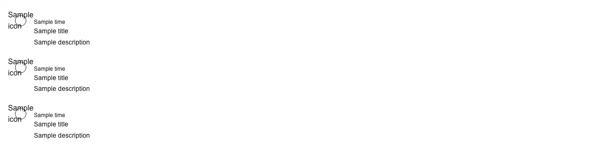

A vertical timeline: a list of events drawn as dots on a connecting line, each with an optional timestamp, title, description and icon. Reach for it wherever the content itself is "what happened, and in what order": an activity feed on a record, profile or dashboard; an audit, security or admin history log; a changelog or release-notes page; order, shipment and delivery tracking; a deploy, build or CI/CD run log; incident updates on a status page; a support ticket's history; approval and review trails; the event stream on an order, invoice or subscription; notification history; a product roadmap; and the experience or education list on a resume or "about" page. Common asks it answers: "timeline component", "vertical timeline", "activity feed", "activity timeline", "history log component", "audit log UI", "changelog timeline", "release notes timeline", "order tracking timeline", "shipment tracking UI", "deploy history list", "event stream component", "status timeline", "shadcn timeline", "shadcn activity feed", "react vertical timeline alternative", "react-chrono alternative", "MUI Timeline equivalent", "antd Timeline equivalent", "resume timeline". shadcn/ui ships no timeline: fetching the source of all 63 items in its registry and grepping them turns up no timeline, no <time> element and no connector line anywhere. The nearest things it has are marker — one annotation row of an icon beside muted text, with a variant that rules a line across it, the "New messages" divider in a chat — and item, a kit for laying out a single row; neither stacks events on a shared line nor carries a time. It is also not step-indicator, the other dots-on-a-line component here: a step indicator counts position through a sequence that is known in advance and still to be finished, while a timeline is the record of what already happened and has no current step. Pass an items array (title, optional time, description, icon and a colour accent). The timestamp renders as a semantic <time> element with a machine-readable dateTime, so it is legible to a reader and to a crawler; the connecting line and the decorative dots are aria-hidden, so a screen reader hears the events rather than the ornament; and each marker takes a per-item colour (muted, primary, success, warning, destructive), so status like succeeded, failed or pending can be flagged without reaching for a second component. Pass an icon to render an icon badge instead of a plain dot. It is a pure display component with no state, so it renders inside a server component with no "use client" and costs nothing on the client. Theme-aware via shadcn tokens with dark mode; no dependencies (bring your own icons).

Rendered on the shadcn default neutral palette with harness-generated props.
pnpm dlx shadcn@4.21.0 add @pulld/timeline
| licence | POINTER |
|---|---|
| primitive base | none |
| type | registry:ui |
| files | src/components/ui/timeline.tsx |
| npm deps pulled | none beyond the pre-installed peer set |
| registry deps | — |
| semantic / palette / hex | 11 / 2 / 0 |
| writes shared ui/ | yes — can overwrite the project’s own primitives |